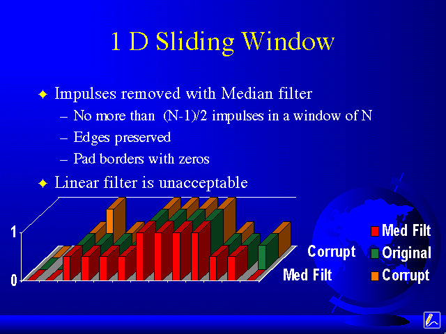
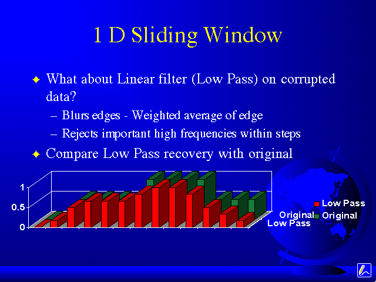

Sliding Window Median Filter Result


This image shows the original data, the corrupt data, and the median filtered data.
Notice that the median filter has successfully removed the impulses, AND has preserved the step.
You may wonder why the last value to the right in the median filtered data has a zero.
The answer is simple.
If we try to center the window on the last value, the right side of the window will be outside of the data field, ie. there is no data point there.
So, we just pad the (N-1)/2 edges with zeros.
In this case N=3, therefore only ((3-1)/2)=1 edge is zeroed.
You may have also realized that if there are more than (N-1)/2 impulses in the window, then the median is an impulse.
This is the key to preserving edges (Step through example again, if needed).
But, if your impulse is larger than (N-1)/2, then the impulse won't be completely removed.
What about a Low Pass Linear Filter? What would it do?

Notice that the data has not been recovered correctly.
There are no more steps, and the results are rather "blurred".
But why?
A linear filter's result is just a weighted average. And with this low pass filter, you get the MEAN of the entities in the window.
So everytime the window is incremented, we get the mean of the data point and it's 2 neighbors (N = 3). Now, if we think about impulses as Donald Trumps, and the window contains one, than the mean will incorrectly represent the actual data.
Or if you want to think of the result in the frequency domain, a low pass filter rejects high frequencies present in an impulse.
Unfortunately, these high frequencies are also present in the steps, and a linear filter can't remove the impulses without removing the steps.
Every linear system has an impulse response, and that impulse response will be apparent in the output.
Although, there are adaptive linear filters such as Wiener Filters that can come up with better results than the low pass filter.
But many engineers argue that the adaptive filters are no longer linear.
Regardless, a Wiener filter can't match up to a median filter for this application.
Low pass filters are very useful with certain types of noise, specifically additive noise.
Additive noise is linear noise. The most common additive noise is AWGN (Additive White Gaussian Noise).
AWGN is used in many linear systems and signals classes as the model for signals corrupted by noise.
Since it is linear in nature (additive - in that is adds to the value that was there before), it is best removed by linear filters.
Within image processing, a low pass filter would be best on AWGN.
Notice that median filters are used for impulsive noise. A median filter CAN NOT remove AWGN, a linear filter is best for that.
And I will show examples later in the 2 Dimensional Median Filter section.
Alright, now we are all familiar with Sliding Window Median Filters, lets see how I did it.
tassone@bucknell.edu